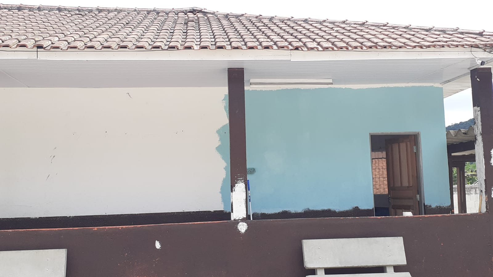

PINTURA NOVA!!!!
33 comments JPN COM NOVAS CORES
A nova pintura na Escola João Pedro é um verdadeiro espetáculo de cores e criatividade, transformando o ambiente educacional em um espaço ainda mais agradável e inspirador. As paredes, antes monótonas, agora ganharam vida com tons vibrantes que refletem a energia positiva da aprendizagem. Os artistas responsáveis pela obra conseguiram captar a essência da juventude e da educação, incorporando elementos lúdicos e motivadores. Murais interativos convidam os alunos a expressarem sua criatividade, enquanto painéis educativos apresentam de forma visualmente atraente diversos temas acadêmicos. A combinação de cores bem escolhidas cria um ambiente acolhedor e estimulante para o desenvolvimento intelectual e social dos estudantes. A escola, agora, não é apenas um local de aprendizado, mas um espaço que inspira a imaginação e promove a colaboração. A nova pintura da Escola João Pedro não apenas renovou as paredes, mas também reforçou o compromisso com a educação de qualidade, transformando cada sala de aula em um cenário propício para o crescimento e a realização pessoal dos alunos.